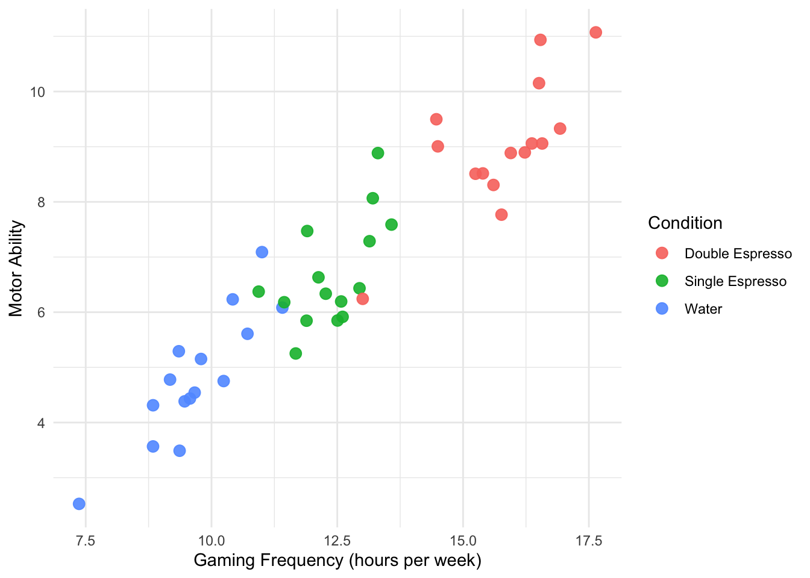
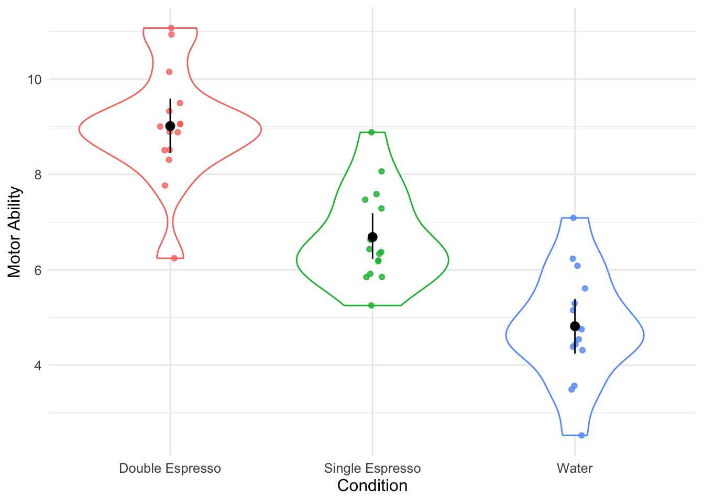
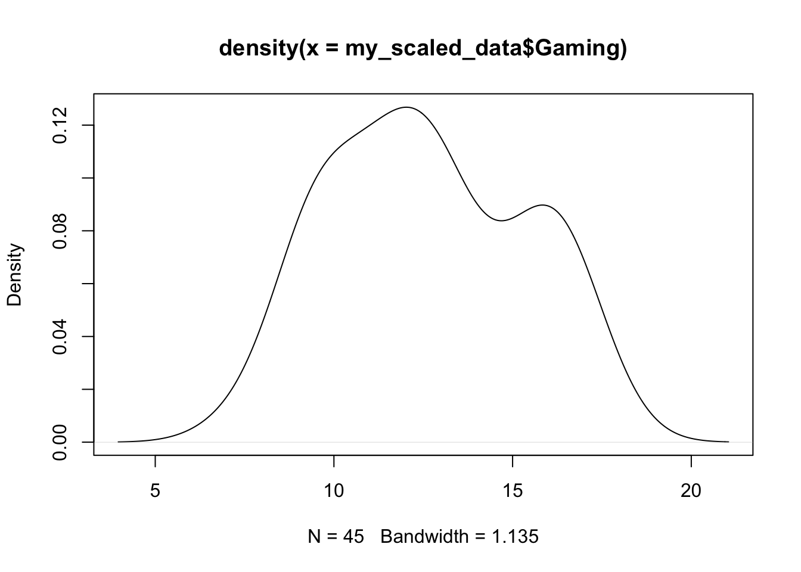
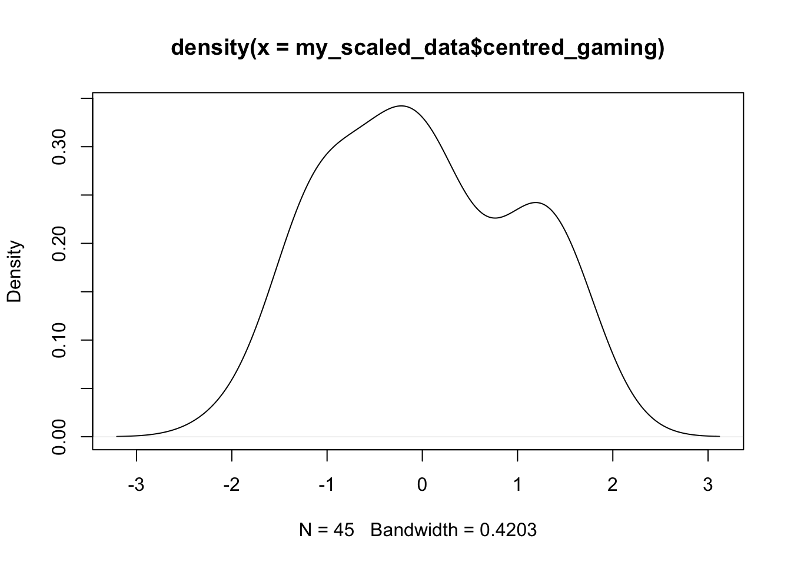

Workshop 9 ANOVA Part 2
9.1 Overview
In this workshop we will continue our examination of ANOVA. Specifically, we will focus on ANCOVA (Analysis of Covariance) before exploring how AN(C)OVA is a special case of regression and how both can be understood in the context of the General Linear Model.
9.2 Building our ANCOVA
9.2.1 Loading our Packages
Let’s run through the ANCOVA example that I cover in the video above. First we need to load the packages we need. We’ll be using the tidyverse for general data wrangling and data visualisation, and then the afex package for building our ANCOVA model, and the emmeans package for running pairwise comparisons and displaying our adjusted means.
9.2.2 Reading in our Data
Now we’re going to read in our data.
my_data <- read_csv("https://raw.githubusercontent.com/ajstewartlang/12_glm_anova_pt2/master/data/ancova_data.csv")## # A tibble: 6 × 4
## Participant Condition Ability Gaming
## <dbl> <chr> <dbl> <dbl>
## 1 1 Water 3.49 9.37
## 2 2 Water 5.61 10.7
## 3 3 Water 5.29 9.35
## 4 4 Water 4.75 10.2
## 5 5 Water 4.44 9.57
## 6 6 Water 2.53 7.37We see Condition isn’t properly coded as a factor, so let’s fix that.
## # A tibble: 6 × 4
## Participant Condition Ability Gaming
## <dbl> <fct> <dbl> <dbl>
## 1 1 Water 3.49 9.37
## 2 2 Water 5.61 10.7
## 3 3 Water 5.29 9.35
## 4 4 Water 4.75 10.2
## 5 5 Water 4.44 9.57
## 6 6 Water 2.53 7.379.2.3 Summarising our Data
Let’s work our some summary statistics and build a data visualisation next.
## # A tibble: 3 × 2
## Condition mean_ability
## <fct> <dbl>
## 1 Double Espresso 9.02
## 2 Single Espresso 6.69
## 3 Water 4.829.2.4 Visualising our Data
ggplot(my_data, aes(x = Gaming, y = Ability, colour = Condition)) +
geom_point(size = 3, alpha = .9) +
labs(x = "Gaming Frequency (hours per week)",
y = "Motor Ability") +
theme_minimal() +
theme(text = element_text(size = 11)) 
We have built a visualisation where we have plotted the raw data points using the geom_point() function.
9.2.5 Building our ANOVA model
Let’s first build an ANOVA model, and ignore the presence of the covariate in our dataset.
## Contrasts set to contr.sum for the following variables: Condition## Anova Table (Type 3 tests)
##
## Response: Ability
## num Df den Df MSE F ges Pr(>F)
## Condition 2 42 1.2422 53.432 0.71786 2.882e-12 ***
## ---
## Signif. codes: 0 '***' 0.001 '**' 0.01 '*' 0.05 '.' 0.1 ' ' 1On the basis of this output, it appears we have an effect of Condition. To explore this further, we would use the emmeans() function to run the pairwise comparisons.
## $emmeans
## Condition emmean SE df lower.CL upper.CL
## Double Espresso 9.02 0.288 42 8.43 9.60
## Single Espresso 6.69 0.288 42 6.11 7.27
## Water 4.82 0.288 42 4.24 5.40
##
## Confidence level used: 0.95
##
## $contrasts
## contrast estimate SE df t.ratio p.value
## Double Espresso - Single Espresso 2.33 0.407 42 5.720 <.0001
## Double Espresso - Water 4.20 0.407 42 10.317 <.0001
## Single Espresso - Water 1.87 0.407 42 4.597 0.0001
##
## P value adjustment: tukey method for comparing a family of 3 estimatesOn the basis of this, we might conclude that we have an effect of Condition, and that each of our three groups differs significantly from the others. But would this be right? No, because we haven’t taken account of our covariate.
Let’s build our ANCOVA model, adding our covariate. We set the factorize parameter to be FALSE so that it is treated as a continuous predictor, rather than an experimental factor in our model.
model_ancova <- aov_ez(id='Participant',
dv = 'Ability',
between = 'Condition',
covariate = 'Gaming',
data = my_data, factorize = FALSE)## Warning: Numerical variables NOT centered on 0 (matters if variable in interaction):
## Gaming## Contrasts set to contr.sum for the following variables: Condition## Anova Table (Type 3 tests)
##
## Response: Ability
## num Df den Df MSE F ges Pr(>F)
## Condition 2 41 0.55171 0.8771 0.04103 0.4236
## Gaming 1 41 0.55171 53.5636 0.56643 5.87e-09 ***
## ---
## Signif. codes: 0 '***' 0.001 '**' 0.01 '*' 0.05 '.' 0.1 ' ' 1On this basis of this output, we see that we no longer have an effect of Condition, but we do have an effect of our covariate.
We can use the emmeans() function to produce the adjusted means (i.e., the means for each of our three groups taking into account the influence of our covariate).
## $emmeans
## Condition emmean SE df lower.CL upper.CL
## Double Espresso 6.32 0.415 41 5.48 7.16
## Single Espresso 6.87 0.193 41 6.48 7.26
## Water 7.33 0.393 41 6.53 8.12
##
## Confidence level used: 0.95
##
## $contrasts
## contrast estimate SE df t.ratio p.value
## Double Espresso - Single Espresso -0.552 0.478 41 -1.155 0.4863
## Double Espresso - Water -1.008 0.761 41 -1.324 0.3900
## Single Espresso - Water -0.456 0.418 41 -1.092 0.5244
##
## P value adjustment: tukey method for comparing a family of 3 estimates9.3 AN(C)OVA as a Special Case of Regression
We are now going to look at ANOVA (and then ANCOVA) as a special case of regression.
9.3.1 Visualising our Data
Let’s visualise the data with Condition on the x-axis.
my_data %>%
ggplot(aes(x = Condition, y = Ability, colour = Condition)) +
geom_violin() +
geom_jitter(width = .05, alpha = .8) +
labs(x = "Condition",
y = "Motor Ability") +
stat_summary(fun.data = mean_cl_boot, colour = "black") +
guides(colour = FALSE) +
theme_minimal() +
theme(text = element_text(size = 12)) ## Warning: The `<scale>` argument of `guides()` cannot be `FALSE`. Use "none" instead as of
## ggplot2 3.3.4.
## This warning is displayed once every 8 hours.
## Call `lifecycle::last_lifecycle_warnings()` to see where this warning was
## generated.
Let’s check how our Condition factor is currently coded in terms of its contrasts. Note, the expression my_data$Condition is the Base R way of referring to the variable called Condition in the dataset my_data.
9.3.2 Setting up our Contrasts
## Single Espresso Water
## Double Espresso 0 0
## Single Espresso 1 0
## Water 0 1We want our Water group to be the reference level (thus corresponding to the intercept of our linear model), and dummy coded as (0, 0) but it’s not currently coded as such. Let’s fix that.
my_data <- my_data %>%
mutate(Condition = fct_relevel(Condition,
c("Water", "Double Espresso", "Single Espresso")))
contrasts(my_data$Condition)## Double Espresso Single Espresso
## Water 0 0
## Double Espresso 1 0
## Single Espresso 0 19.3.3 ANOVA as a Linear Model
OK, this is now what we want. Let’s model our linear model using the lm() function and examine the result.
##
## Call:
## lm(formula = Ability ~ Condition, data = my_data)
##
## Coefficients:
## (Intercept) ConditionDouble Espresso ConditionSingle Espresso
## 4.817 4.199 1.871We can see that the Intercept corresponds to the mean of our Water Condition. To work out the mean Ability of our Double Espresso Group, we use the coding for the Double Espresso group (1, 0) with our equation:
Ability = Intercept + β1(Double Espresso) + β2(Single Espresso)
Ability = 4.817 + 4.199(1) + 1.871(0)
Ability = 4.817 + 4.199
Ability = 9.016
To work out the mean Ability of our Single Espresso Group, we use the coding for the Single Espresso group (0, 1) with our equation:
Ability = 4.817 + 4.199(0) + 1.871(1)
Ability = 4.817 + 1.871
Ability = 6.688
9.3.4 ANCOVA as a Linear Model
OK, now to build our ANCOVA using the lm() function, we simply add the covariate (Gaming) to our model specification.
##
## Call:
## lm(formula = Ability ~ Gaming + Condition, data = my_data)
##
## Coefficients:
## (Intercept) Gaming ConditionDouble Espresso
## -3.4498 0.8538 -1.0085
## ConditionSingle Espresso
## -0.4563We can work out the mean of our reference group (Water) by plugging in the values to our equation - note that Gaming is not a factor and we need to enter the mean of this variable.
We can work it out with the following.
## [1] 12.62296We add this mean (12.62296) to our equation alongside the co-efficients for each of our predictors. With our dummy coding scheme, we can work out the adjusted mean of our Water group.
Ability = Intercept + β1(Gaming) + β2(Double Espresso) + β3(Single Espresso)
Ability = -3.4498 + 0.8538(12.62296) + (- 1.0085)(0) + (-0.4563)(0)
Ability = -3.4498 + 10.777
Ability = 7.33
7.33 is the adjusted mean for the Water group, which is what we had from calling the emmeans() function following the ANCOVA. Have a go yourselves at working out the adjusted means of the other two Conditions using our dummy coding.
9.3.5 Centering our Covariate
In the video, I mention that we could also have scaled and centred our covariate. This standardises the variable (with the mean centred on zero) and removes the need to multiply the linear model coefficient for the covariate by the covariate’s mean. Generally, it makes interpretation of the coefficients in our linear model easier.
We can use the scale() function to create a new (scaled and centred) version of our covariate in our data frame.
We can look at both the uncentred and the centred covariate to see that nothing has changed in the data, other than the variable mean is now centred on zero and the distribution has been scaled.


So let’s build our linear model with the scaled and centred covariate.
model_ancova_centred <- lm(Ability ~ centred_gaming + Condition, data = my_scaled_data)
model_ancova_centred##
## Call:
## lm(formula = Ability ~ centred_gaming + Condition, data = my_scaled_data)
##
## Coefficients:
## (Intercept) centred_gaming ConditionDouble Espresso
## 7.3280 2.3046 -1.0085
## ConditionSingle Espresso
## -0.4563We see that the Intercept now corresponds to the adjusted mean for the Water group. We can calculate the adjusted mean for the Double Espresso group by subtracting 1.0085 from 7.3280, and we can calculate the adjusted mean for the Single Espresso group by subtracting 0.4563 from 7.3280. Hopefully you see that scaling and centering the covariate makes it’s a lot easier to then interpret the coefficients of our linear model.
End of workshop 9 materials
End of unit materials!